Как пользоваться «Копит»
Суть подхода: зарплата самому себе
Доход может приходить нерегулярно, а расходы на жизнь повторяются каждый месяц. Вы выбираете месячный бюджет и отделяете деньги на жизнь от резерва будущих месяцев и накоплений на цели. Так вы ориентируетесь на понятную сумму расходов, а не на размер последнего поступления.
Бюджет — план: приложение распределяет только деньги, которые у вас действительно есть.
- Остаток месяца — на повседневные расходы до его конца.
- Резерв — на будущие месяцы; он может быть больше одной зарплаты.
- Цели — отдельные накопления на конкретные покупки и планы.
Новый доход сначала обеспечивает месяц и минимальный резерв. Оставшуюся свободную сумму вы направляете на цели или дополнительный запас.
1. Начните с фактических денег
При первом входе задайте бюджет на месяц, укажите уже потраченное и сколько денег действительно есть. Разделите их на остаток текущего месяца и резерв. Накопления целей укажите отдельно, не учитывая их повторно в общей сумме. Категории и их лимиты необязательны. Проверьте итог и нажмите «Сохранить и начать»: стартовые остатки сохранятся вместе, без фиктивных доходов и расходов.
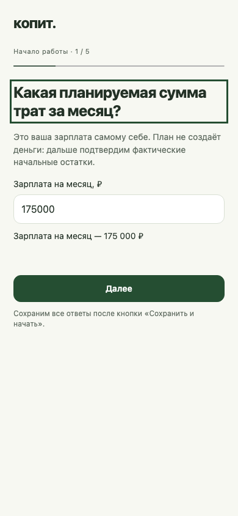
2. Смотрите, сколько осталось на месяц
На главной крупно показан остаток, ниже — ориентиры на неделю и день. Это подсказки на оставшиеся дни, а не дополнительные деньги. Резерв и свободные деньги показаны отдельно. Ниже — расходы по категориям, месячные лимиты и сколько осталось. Цели и распределение находятся во вкладке «Цели». Бюджет можно изменить в настройках: меняется план, сами остатки не перекладываются. При перерасходе сумма показывается с минусом; деньги из целей автоматически не забираются.

3. Записывайте каждое поступление
Нажмите «+ Доход» на главной и введите сумму. Доход сначала покрывает перерасход и нехватку текущего месячного бюджета, затем пополняет резерв до одного месячного бюджета. Оставшаяся часть появляется в строке «Доступно для целей». Например: бюджет 100 000 ₽, остаток 60 000 ₽, уже потрачено 40 000 ₽, резерв 70 000 ₽. Из нового дохода 80 000 ₽ в резерв пойдёт 30 000 ₽, а свободными станут 50 000 ₽.
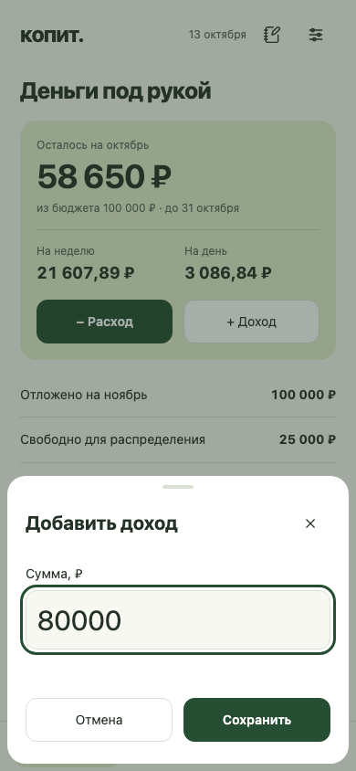
4. Записывайте расходы в своих категориях
Нажмите «− Расход», укажите сумму, категорию и дату. Сегодня выбрано по умолчанию; доступны даты активного месяца не позднее сегодня. Новую категорию можно создать прямо из формы — сумма и дата сохранятся. Теги необязательны. Категории, пиктограммы и лимиты меняются в настройках; архивную категорию можно вернуть, её прежние записи остаются в истории.
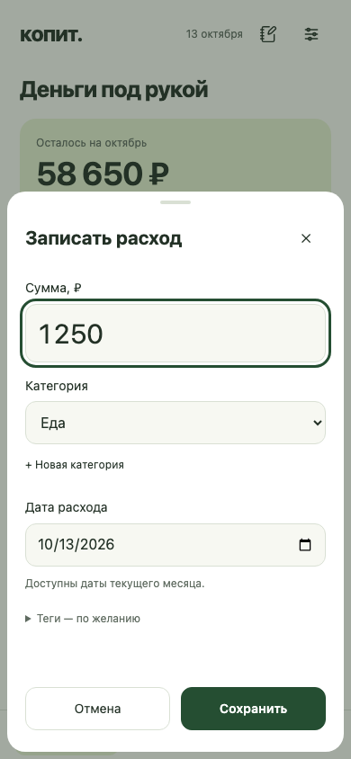
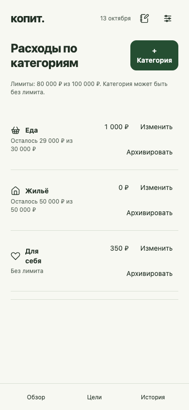
5. Заполняйте дневник несколькими строками
Нажмите иконку блокнота рядом с датой. На отдельной странице «Как прошёл день?» выберите день и нажмите «+ Добавить расход». В каждой строке выберите категорию и введите сумму. Ненужную строку можно убрать. Уже записанные суммы показаны отдельно: повторно вводить их не нужно. Проверьте итог новых расходов. Если за день нет записанных расходов, доступна отметка «Сегодня без расходов». Сохраните весь список одной кнопкой.
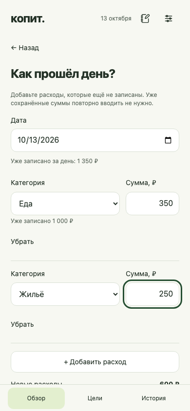
6. Распределяйте свободные деньги осознанно
Когда обеспечены текущий месяц и резерв следующего, во вкладке «Цели» нажмите «Распределить»: откроется отдельная страница. Ползунки меняют суммы с шагом 500 ₽ и не позволяют превысить доступное. В полях рядом можно ввести точную сумму, включая копейки. Выберите цели или «Резерв будущих зарплат». Нераспределённый остаток меньше 500 ₽ отправится в резерв при сохранении — это показано заранее. Остаток ровно 500 ₽ останется свободным. Резерв может хранить деньги на несколько месяцев.
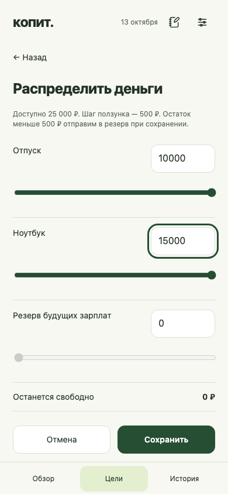
7. Копите на конкретные цели
Добавьте название цели, нужную сумму, уже накопленное и срок по желанию. Кольцо показывает прогресс; нажмите строку цели, чтобы открыть её карточку, пополнения и историю. Пополнение использует свободные деньги. Достигнутую цель можно завершить, сохранив накопления. Просроченную дату можно перенести или убрать. Изменение «Уже накоплено» у существующей цели требует подтверждения: это корректировка фактических денег, она меняет общий капитал и записывается в журнал.
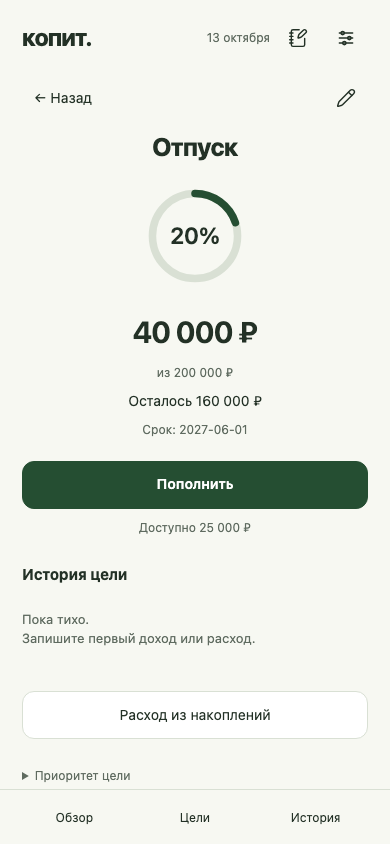
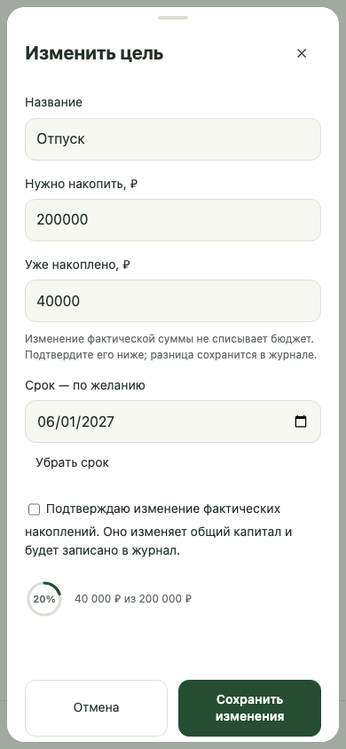
8. Исправляйте записи через историю
В «Истории» выберите месяц и нажмите «Изменить» рядом с доходом или расходом. Запись активного месяца можно исправить или удалить; отмена последнего удаления остаётся доступна до завершения месяца, в том числе после перезагрузки. Если доход уже использован, приложение не станет скрыто списывать деньги из целей или делать резерв отрицательным. Для старого дохода без записанного распределения нужна отдельная сверка. Закрытые месяцы доступны для просмотра.
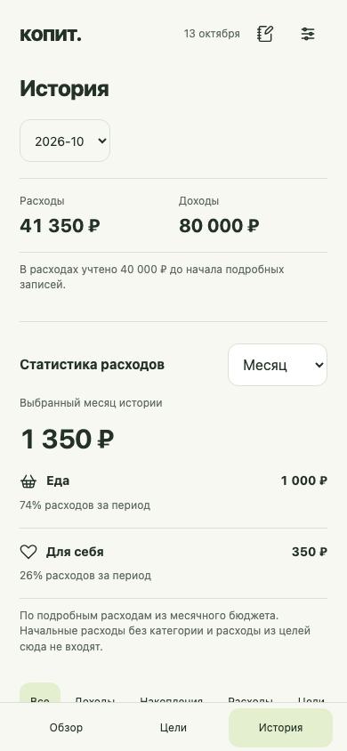
9. Завершайте месяц вручную
С первого числа нового месяца на главной появляется блок «Завершить месяц». Он остаётся, даже если выйти из сценария. Сначала распределите свободные деньги по целям или отправьте их в резерв. Переносится весь остаток, недостающее берётся из резерва, неиспользованный резерв сохраняется. Если денег не хватает, месяц всё равно начнётся с доступной суммой и предупреждением о дефиците. Пропущенные месяцы закрываются по очереди; повторное нажатие не выполняет тот же переход второй раз.
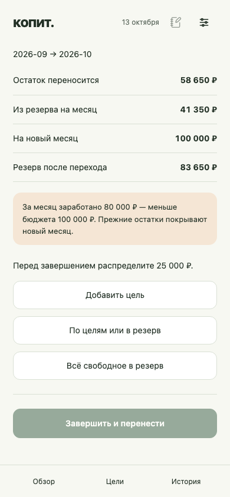
10. Проверяйте результат сохранения
После подтверждения действия записи сохраняются в аккаунте и доступны на другом устройстве. Если связь прервалась и результат неизвестен, перезагрузите страницу: приложение повторит тот же запрос, а сервер не выполнит его дважды. Проверьте историю, прежде чем создавать новую запись вручную. В демоверсии изменения исчезают после перезагрузки; рабочая версия предназначена для личного учёта. Храните периодические экспорты в защищённом месте.
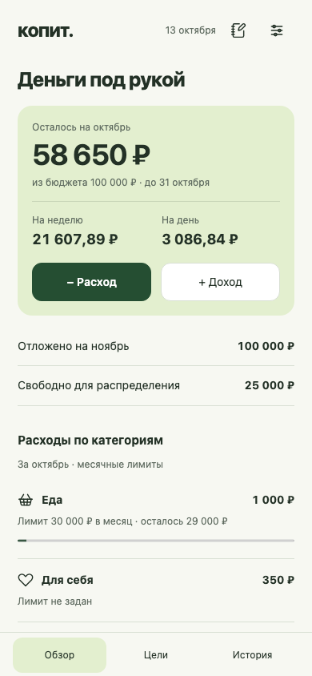
Скриншоты сняты в текущем интерфейсе на вымышленных данных. Обновлено 13 октября 2026 года.
На главной показаны расходы по категориям и их месячные лимиты. Изменить лимиты можно в настройках категорий; это план, а не запрет на расход. Цели и распределение находятся во вкладке «Цели»; на главной первого числа появляется подсказка. В истории статистика доступна за выбранный месяц, текущую календарную неделю (с понедельника) и текущий год. Она учитывает подробные расходы из месячного бюджета; начальные расходы без категории и расходы из накоплений целей исключены и обозначены пояснением.
Открыть приложение →